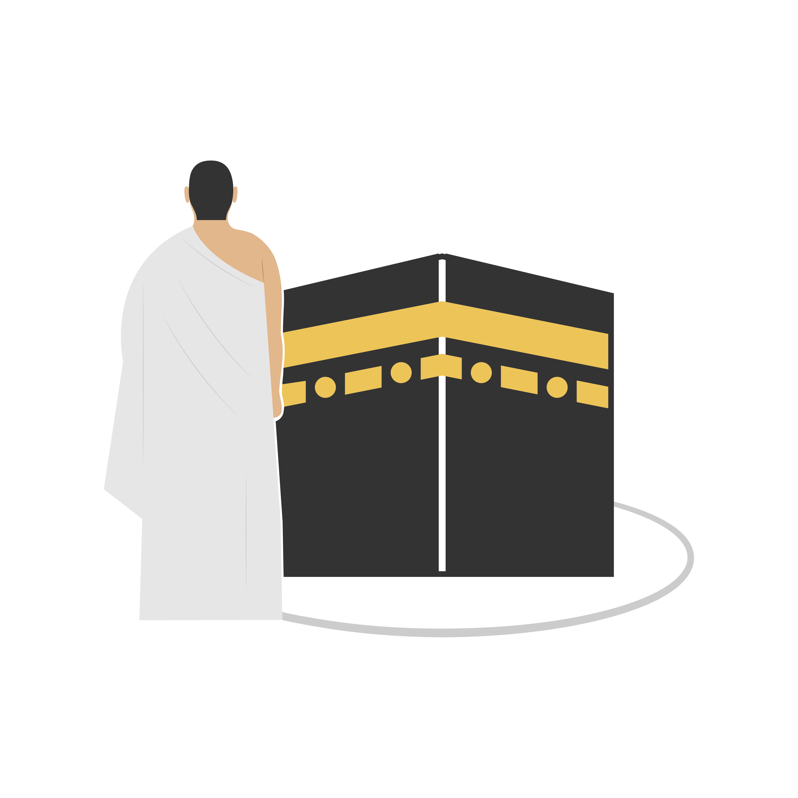
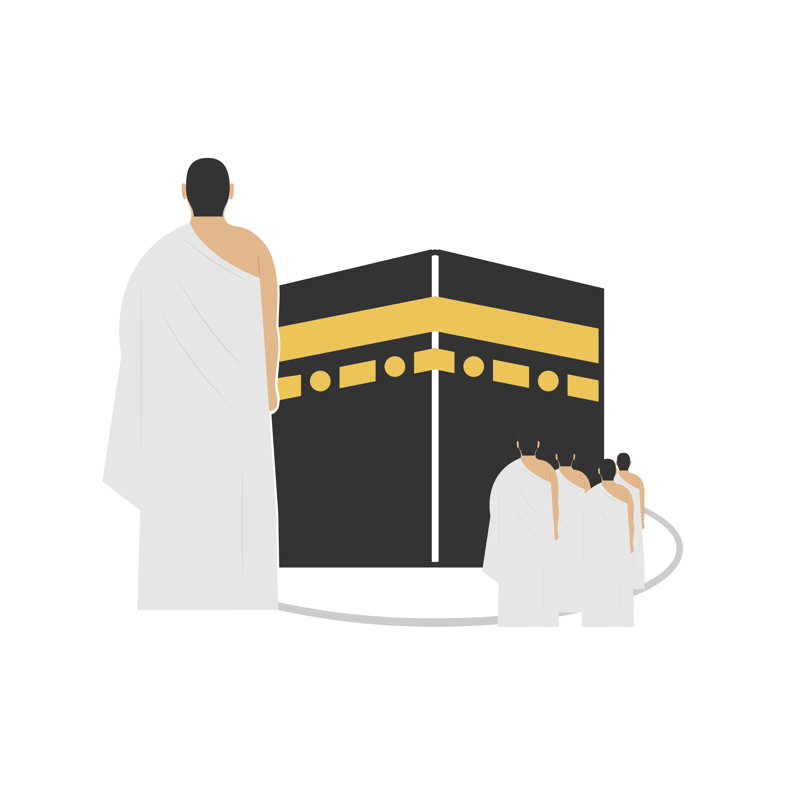
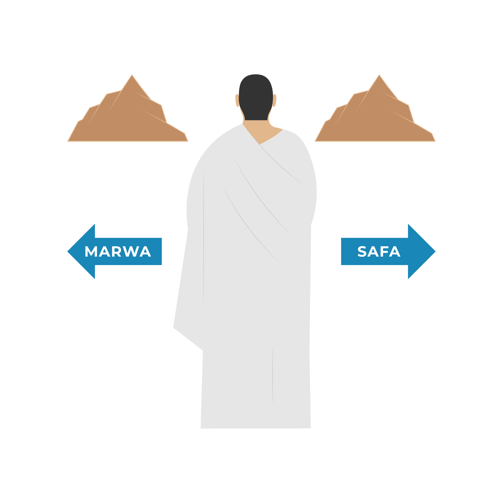

Introduction
« Le pèlerin Hajj ainsi que le pèlerin Omra sont une délégation d’Allah... »
عن جابر رضي الله عنه ...

L’ESSENTIEL À SAVOIR
LES PILIERS
- Ihram
- Tawaf
- Sa’y
LES ACTES OBLIGATOIRES
- Se mettre en état d’ihram depuis le Miqat
- Le rasage ou la coupe des cheveux
L’IHRAM
Pour entrer dans le territoire sacré de La Mecque, le pèlerin doit être en état d’ihram.
Avant d’entrer en état d’ihram, il est recommandé de :
- Se couper les ongles.
- Retirer les poils indésirables.
- Faire le ghusl.
Pour entrer en état d’ihram, il est obligatoire de :
- Mettre la tenue d’ihram spécifique pour les hommes*, composée :
- du rida’, une tunique couvrant le haut du corps.
- du izâr, le pagne couvrant le bas du corps.
- des sandales.
- *Vêtement classique pour la femme (voile légiféré) sans se couvrir les mains et le visage.
- Formuler l’intention d’accomplir la ‘Omra à voix haute à l’entrée du Miqat.
لَبَّيْكَ اللَّهُمَّ عُمْرَةً
Labbayka Allahumma 'umrah
Je réponds à Ton appel, Ô Allah, par une Omra
LES INTERDITS EN ÉTAT DE SACRALISATION
- Ne pas se couper les cheveux ou les ongles
- Ne pas se parfumer
- Ne pas avoir de rapports intimes
- Ne pas contracter de mariage
- Ne pas chasser
RÉCITER LA TALBIYA
À partir de quand ?
- Le franchissement du Miqat.
Jusqu’à quand ?
- La vision de la Ka’ba.
Comment ?
- Pour les hommes : à voix haute.
- Pour les femmes : à voix basse.
Bon à savoir
Il est tout à fait possible de passer par votre hôtel et déposer vos affaires avant d’entamer le Tawaf.
Il est également recommandé de refaire ses grandes ablutions avant de se rendre à la mosquée sacrée, comme l'a fait le Prophète ﷺ, en faisant attention à ne pas utiliser de savon ou de produit parfumé.
لَبَّيْكَ اللَّهُمَّ لَبَّيْكَ...
Labbayka llāhumma labbayk...
Me voilà, ô Seigneur, me voilà ! Tu n'as aucun associé. Me voilà ! Certes, la louange, le bienfait et la souveraineté absolue T'appartiennent, Tu n'as aucun associé.
LE TAWAF
- Couvrir sa awra
- Avoir ses ablutions
- Commencer chaque tour à la pierre noire
- Circuler autour de la Ka’ba dans le sens contraire des aguilles d’une montre.
- Faire 7 tours autour de la Ka’ba, sans arrêt important entre deux tours successifs (sauf exception, comme la prière obligatoire).
INVOCATION À DIRE AU DÉBUT DU TAWAF
بسمِ اللهِ وَاللهُ أَكْبَرُ، اللَّهُمْ إِيمَانًا بك وَتَصْدِيقًا بكتابك وَوَفَاءَ بِعَهْدِكَ وَأَثْبَاعًا لِسُنَّةِ نَبِيَّكَ صَلَّى اللَّهُ عَلَيْهِ وَسَلَّمَ
Bismi-Llâhi wa-Llâhou akbar, Allâhoumma îmânan bika wa tasdîqan bi-kitâbika wa wafâ'an bi-'ahdika wa itibâ'an li-sounnați nabiyyika salla Llâhou 'alayhi wa sallama.
Au nom d'Allah et Allah est le plus grand. Ô Allah, par foi en Toi, et par croyance en Ton Livre, et par fidélité à Ton pacte, et en suivant la tradition de Ton Prophète (paix et bénédictions d'Allah sur lui).
Les sunan du Tawaf
- Dénuder l’épaule droite pour les hommes.
- Embrasser* la pierre noire si c’est possible, sinon la toucher* ou encore faire un signe de main vers elle à chaque tour.
- Hâter le pas durant les trois premiers tours, pour les hommes*.
- Faire du dikr (évocations d’Allah, lecture du coran) ou des invocations.
- Toucher le coin Yéménite de la ka’ba si possible à chaque tour*.
- *Ces actes font partie de la Sunna surérogatoire. Il est donc recommandé de les délaisser s’ils causent une gène à soi-même ou aux autres, car le Prophète a dit : ‘Ne causez pas de tort et ne vous en faites pas causer’ (hadith authentique rapporté par Ibn Maja).
- Entre le coin Yéménite et la pierre noire, dire l’invocation suivante :
رَبَّنَا آتِنَا فِي الدُّنْيَا حَسَنَةً وَفِي الْآخِرَةِ حَسَنَةً وَقِنَا عَذَابَ النَّارِ
Rabbanâ âtinâ fi-d-dunyâ hasana wa fi-l-âkhirati hasana wa qinâ 'adhâb an-når
Seigneur, accorde-nous une bonne part ici- bas et une bonne part dans l'au-delà, et protège-nous du châtiment du feu.
FAIRE UNE PRIÈRE DE 2 UNITÉS
C’est une grande recommandation prophétique. Lorsque vous approchez du Maqâm Ibrahim, vous pourrez citer le verset, dans sa version en arabe :
Ils ont adopté la station Ibrahim comme lieu de prière - Sourate Al Baqarah - verset 125
I L EST RECOMMANDÉ DE RÉCITER :
- 1ere unité Sourate Al Karifoun.
- 2eme unité Sourate Al Ikhlas.
- Les hommes doivent recouvrir l'épaule droite avant de prier.
Bon à savoir : S’il y a trop d’affluence, vous pouvez vous éloigner. Cette prière peut être effectuée n’importe où dans la Mosquée.
Infos sécurité : Le pèlerin doit éviter de prier sur le mataf, là où les autres pèlerins circulent.
À DIRE PRÈS DE MAQÂM IBRAHIM AVANT D'EFFECTUER CETTE PRIÈRE
وَاتَّخِذُوا مِن مَّقَامِ إِبْرَهِيمَ مُصَلَّى
Wa Attakhidhu Min Maqāmi 'Ibrāhīma Muşallaan
Et ils ont adopté la station Ibrahim comme lieu de prière
BOIRE DE L’EAU DE ZAMZAM
Durant la ‘Omra, vous pouvez profiter de tous les bienfaits de l’eau de Zamzam. En effet, il est recommandé à ce stade d’en boire à satiété, tout en invoquant Allah ﷻ.
Lorsqu’on boit de l’eau de Zamzam, il est recommandé de manière générale de boire assis et en 3 fois.
Bon à savoir :
À ce stade, il est possible de se reposer un peu avant d’entamer l’étape suivante.
INVOCATION DU COMPAGNON IBN ABBAS
اللَّهُمَّ إِنِّي أَسْأَلُكَ عِلْمًا نَافِعًا وَرِزْقًا وَاسِعًا وَشِفَاءً مِنْ كُلِّ دَاءِ
Allâhoumma innî as'alouka 'ilman nâfi'an wa rizqan wâsi'an wa shifâ'an min koulli dâ'in.
Ô Allah, je Te demande une science utile, une subsistance abondante et une guérison de toute maladie.
EFFECTUER LE SA’Y
Le parcours entre Safa et Marwa
Safa et Marwa sont deux monticules non loin de la Ka’ba. Le Sa’y consiste à effectuer 7 fois le parcours entre eux, ce qui correspond à un peu moins de 400 mètres de distance pour chaque trajet.
LES CONDITIONS :
- Il n’est à effectuer que dans le cadre de la ‘Omra et du Hajj.
- Il faut débuter par le mont Safa et terminer à Marwa.
- Le parcours est à réaliser 7 fois : le trajet de Safa à Marwa compte pour 1, et le trajet de Marwa à Safa compte pour 1 également.
- Il est important d’aller jusqu’au début de la montée de chacun des deux monticules, au moins.
À DIRE EN ARRIVANT SUR SAFÂ
إِنَّ الصَّفَا وَ المَرْوَةَ مِنْ شَعَائِرِ اللهِ
Inna safâ wa-l-marwata min sha'â iri l-lâh.
Al-Safa et Al-Marwa sont vraiment parmi les lieux sacrés d'Allah. Sourate 2 - Verset 187
أَبْدَأَ بِمَا بَدَأَ اللهُ بِهِ
Abda'u bimâ badaa l-lâhou bihi
Je commence par ce avec quoi Allah a commencé.
LES RECOMMANDATIONS DU SA’Y
- De préférence avoir les petites ablutions (wudû) mais ne pas les avoir n’empêche pas la validité de l’acte.
- Faire des invocations lorsqu’on se trouve au pied de chaque monticule, mais en faisant face à la Ka’ba.
- Invoquer Allah ﷻ pendant le parcours.
- Entre les deux bornes vertes, il est recommandé aux hommes de parcourir cette distance en courant. Si les conditions ne le permettent pas, il faut alors marcher normalement.
Bon à savoir : Entre chaque monticule, le pèlerin peut invoquer librement.
SUR SAFA ET MARWA EN SE DIRIGEANT VERS LA KA'BA
اللهُ أَكْبَرُ، اللهُ أَكْبَرُ، اللهُ أَكْبَرُ، لا إلَهَ إِلَّا اللهُ وَحْدَهُ لا شَرِيكَ لَهُ، لَا الْمُلْكُ وَلَهُ الْحَمْدُ يُحْيِي وَيُمِيتُ وَهُوَ عَلَى كُلِّ شَيْءٍ قَدِيرٌ، لَا إِلَهَ إِلَّا اللهُ وَحْدَهُ أَنْجَزَ وَعْدَهُ، وَنَصَرَ عَبْدَهُ وَهَزَمَ الْأَحْزَابَ وَحْدَهُ
Allahu akbar, Allâhu akbar, Allâhu akbar, Lâ ilâha illâ l-lâhu, wahdahu lâ sharîka lahu, lahu-l-mulku wa lahu-l-hamdu, yuhyî wa yumît, Wa fik bârakAllah huwa 'ala kulli shay'in qadîrun.Lâ ilâha illâ l-lâhu wahdahu. Anjaza wa'dahu, wa nasara 'abdahu, wa hazama-l-ahzâba wahdahu
Allah est le plus grand, Allah est le plus grand, Allah est le plus grand. Il n'y a pas de divinité digne d'être adorée à part Allah, seul, sans associé. À Lui appartient la Royauté et à Lui revient la louange, Il donne la vie et Il donne la mort, et il a le pouvoir sur toute chose. Il n'y a pas de divinité digne d'être adorée à part Allah, seul. Il a accompli Sa promesse, a accordé la victoire à Son serviteur, et a vaincu les coalisés seul.
PUIS INVOQUER ALLAH EN LEVANT LES MAINS, ENSUITE RÉPÉTER CELA UNE DEUXIÈME FOIS, PUIS UNE TROISIÈME FOIS.
SE COUPER LES CHEVEUX
La coupe de cheveux est obligatoire pour les hommes et les femmes. Pour les hommes, il s’agit de se raser ou se couper les cheveux sur toute la tête. Le rasage est meilleur.
Des coiffeurs sont d’ailleurs présents pour couper les cheveux des hommes, dès la sortie de la Mosquée. Il est également possible de le faire dans sa chambre d’hôtel.
Cette option doit etre à privilégier pour les femmes, qui se couperont alors une partie de leurs cheveux, de la taille d’une phalange (1 à 2 cm).
C’EST L’ÉTAPE DE LA DÉSACRALISATION, LE PÈLERIN SORT DE L’ÉTAPE D’IHRAM
